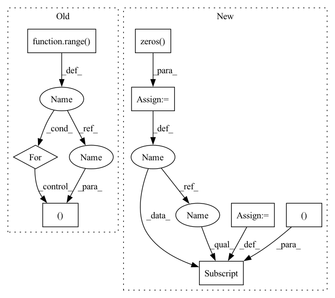

Pattern ID :13493

Before Change
px = np.clip(px, 0, width - 1)
py = np.clip(py, 0, height - 1)
heightmap[py, px] = points[:, 2] - bounds[2, 0]
for c in range(colors.shape[-1]):
colormap[py, px, c] = colors[:, c]
segmmap[py, px] = ids[:]
return heightmap, colormap, segmmap
After Change
colormap = np.zeros((height, width, colors.shape[-1]), dtype=np.uint8)
segmmap = np.zeros((height, width), dtype=np.int32)
positionmap = np.zeros((height, width, 3), dtype=np.float32)
posemap = np.zeros((height, width, 3), dtype=np.float32)
// Filter out 3D points that are outside of the predefined bounds.
ix = (points[..., 0] >= bounds[0, 0]) & (points[..., 0] < bounds[0, 1])
iy = (points[..., 1] >= bounds[1, 0]) & (points[..., 1] < bounds[1, 1])
iz = (points[..., 2] >= bounds[2, 0]) & (points[..., 2] < bounds[2, 1])
valid = ix & iy & iz
points = points[valid]
colors = colors[valid]
ids = ids[valid]
positions = positions[valid]
poses = poses[valid]
// Sort 3D points by z-value, which works with array assignment to simulate
// z-buffering for rendering the heightmap image.
iz = np.argsort(points[:, -1])
points, colors, ids, positions, poses = (
points[iz],
colors[iz],
ids[iz],
positions[iz],
poses[iz],
)
px = np.int32(np.floor((points[:, 0] - bounds[0, 0]) / pixel_size))
py = np.int32(np.floor((points[:, 1] - bounds[1, 0]) / pixel_size))
px = np.clip(px, 0, width - 1)
py = np.clip(py, 0, height - 1)
heightmap[py, px] = points[:, 2] - bounds[2, 0]
colormap[py, px] = colors[:]
segmmap[py, px] = ids[:]
positionmap[py, px] = positions[:]
posemap[py, px] = poses[:]
return heightmap, colormap, segmmap, positionmap, posemap
In pattern: SUPERPATTERN
Frequency: 3
Non-data size: 8
Instances
Fragment ID: 45478389
Project Name: wkentaro/reorientbot
Commit Name: 56af9845d0c8c6e658161267f7677966f24e646c
Time: 2021-07-02
Author: www.kentaro.wada@gmail.com
File Name: examples/target_pick/_get_heightmap.py
M Class Name: AnonimousClass
N Class Name: AnonimousClass
M Method Name: get_heightmap(7)
N Method Name: get_heightmap(5)
M Parent Class:
N Parent Class:
M File Name: examples/target_pick/_get_heightmap.py
N File Name: examples/target_pick/_get_heightmap.py
M Start Line: 23
M End Line: 47
N Start Line: 4
N End Line: 58
'>
Before Change
px = np.clip(px, 0, width - 1)
py = np.clip(py, 0, height - 1)
heightmap[py, px] = points[:, 2] - bounds[2, 0]
for c in range(colors.shape[-1]):
colormap[py, px, c] = colors[:, c]
segmmap[py, px] = ids[:]
return heightmap, colormap, segmmap
After Change
colormap = np.zeros((height, width, colors.shape[-1]), dtype=np.uint8)
segmmap = np.zeros((height, width), dtype=np.int32)
positionmap = np.zeros((height, width, 3), dtype=np.float32)
posemap = np.zeros((height, width, 3), dtype=np.float32)
// Filter out 3D points that are outside of the predefined bounds.
ix = (points[..., 0] >= bounds[0, 0]) & (points[..., 0] < bounds[0, 1])
iy = (points[..., 1] >= bounds[1, 0]) & (points[..., 1] < bounds[1, 1])
iz = (points[..., 2] >= bounds[2, 0]) & (points[..., 2] < bounds[2, 1])
valid = ix & iy & iz
points = points[valid]
colors = colors[valid]
ids = ids[valid]
positions = positions[valid]
poses = poses[valid]
// Sort 3D points by z-value, which works with array assignment to simulate
// z-buffering for rendering the heightmap image.
iz = np.argsort(points[:, -1])
points, colors, ids, positions, poses = (
points[iz],
colors[iz],
ids[iz],
positions[iz],
poses[iz],
)
px = np.int32(np.floor((points[:, 0] - bounds[0, 0]) / pixel_size))
py = np.int32(np.floor((points[:, 1] - bounds[1, 0]) / pixel_size))
px = np.clip(px, 0, width - 1)
py = np.clip(py, 0, height - 1)
heightmap[py, px] = points[:, 2] - bounds[2, 0]
colormap[py, px] = colors[:]
segmmap[py, px] = ids[:]
positionmap[py, px] = positions[:]
posemap[py, px] = poses[:]
return heightmap, colormap, segmmap, positionmap, posemap
'>
Fragment ID: 45478388
Project Name: wkentaro/reorientbot
Commit Name: 56af9845d0c8c6e658161267f7677966f24e646c
Time: 2021-07-02
Author: www.kentaro.wada@gmail.com
File Name: examples/target_pick/_get_heightmap.py
M Class Name: AnonimousClass
N Class Name: AnonimousClass
M Method Name: get_heightmap(7)
N Method Name: get_heightmap(5)
M Parent Class:
N Parent Class:
M File Name: examples/target_pick/_get_heightmap.py
N File Name: examples/target_pick/_get_heightmap.py
M Start Line: 23
M End Line: 47
N Start Line: 4
N End Line: 58
'>
Before Change
select_size = gt_units.shape[1]
units_size = gt_units.shape[2]
for i in range(batch_size):
j = gt_select_units_num[i]
if j < select_size:
nums = min(units_size - 1, entity_nums[i].item())
nums = torch.tensor(nums, dtype=entity_nums.dtype, device=entity_nums.device)
gt_units[i, j] = L.tensor_one_hot(nums, units_size).long()
gt_units = gt_units.reshape(-1, units_size)
print("gt_units.shape", gt_units.shape) if debug else None
After Change
select_size = gt_units.shape[1]
units_size = gt_units.shape[2]
padding = torch.zeros(batch_size, 1, units_size, dtype=gt_units.dtype, device=gt_units.device)
token = torch.tensor(AHP.max_entities - 1, dtype=padding.dtype, device=padding.device)
padding[:, 0] = L.tensor_one_hot(token, units_size).reshape(-1)
gt_units = torch.cat([gt_units, padding], dim=1)
print("gt_units", gt_units) if debug else None
print("gt_units.shape", gt_units.shape) if debug else None
gt_units[torch.arange(batch_size), gt_select_units_num] = L.tensor_one_hot(entity_nums, units_size).long()
// for i in range(batch_size):
// j = gt_select_units_num[i]
'>
Fragment ID: 45478391
Project Name: liuruoze/mini-alphastar
Commit Name: 915eac43e5d4020880519d5c9094dc622a9acdfb
Time: 2021-12-15
Author: liuruoze@163.com
File Name: alphastarmini/core/arch/arch_model.py
M Class Name: ArchModel
N Class Name: ArchModel
M Method Name: sl_forward(9)
N Method Name: sl_forward(9)
M Parent Class: nn.Module
N Parent Class: nn.Module
M File Name: alphastarmini/core/arch/arch_model.py
N File Name: alphastarmini/core/arch/arch_model.py
M Start Line: 188
M End Line: 204
N Start Line: 188
N End Line: 212